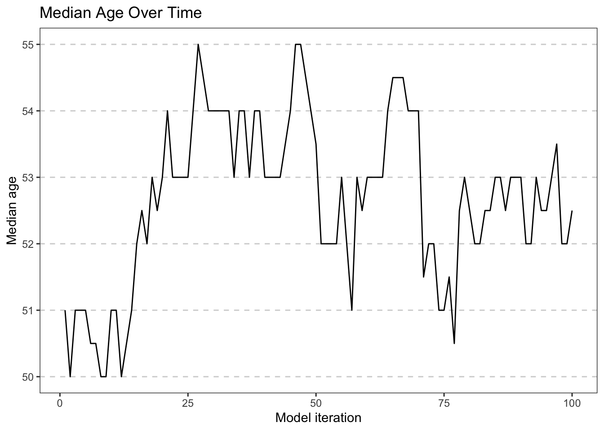
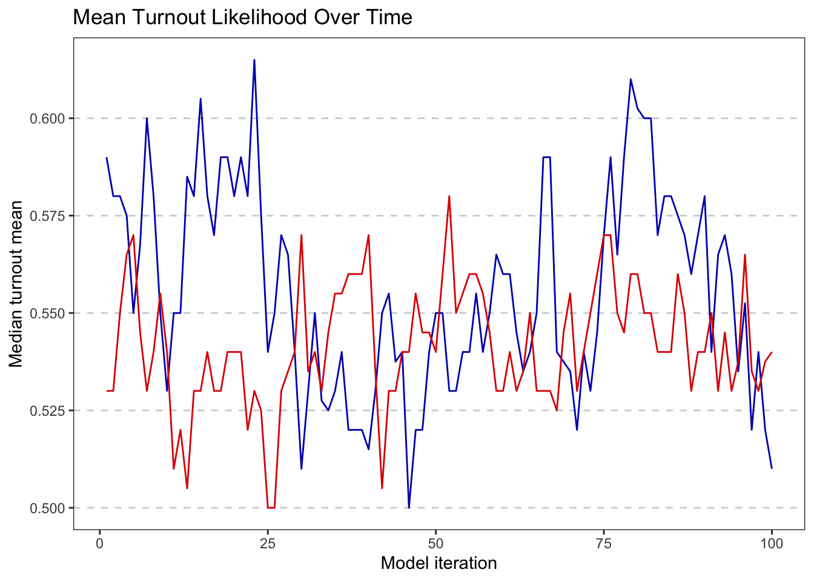
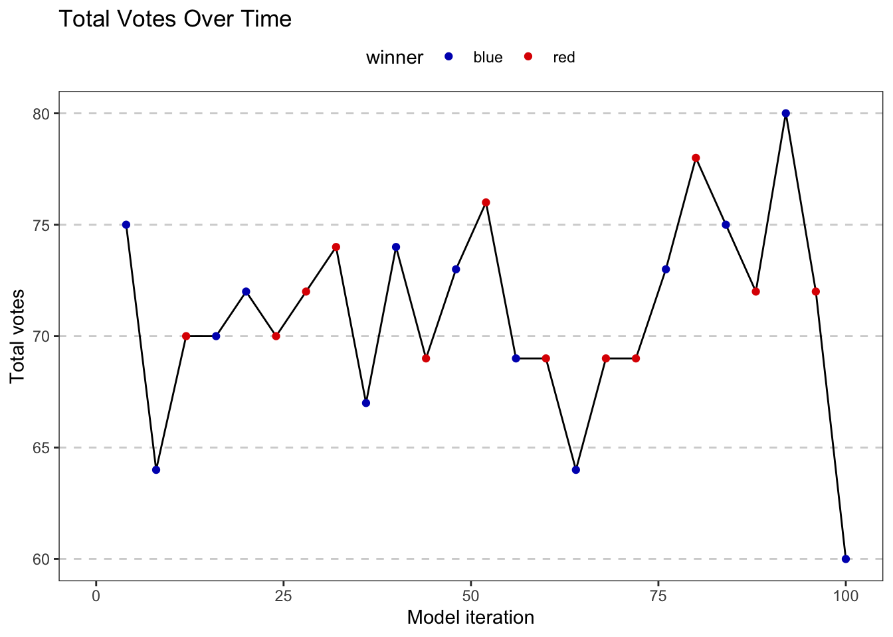
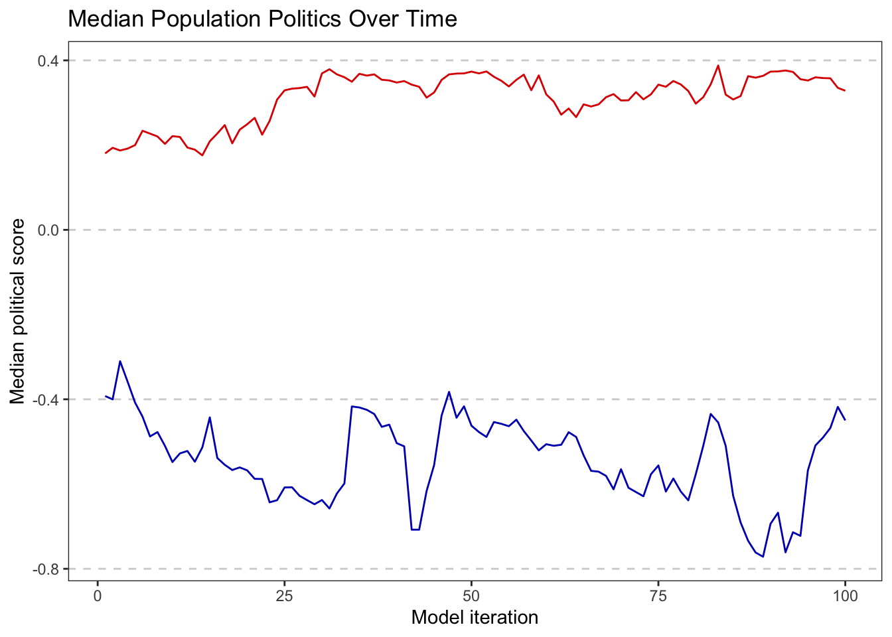
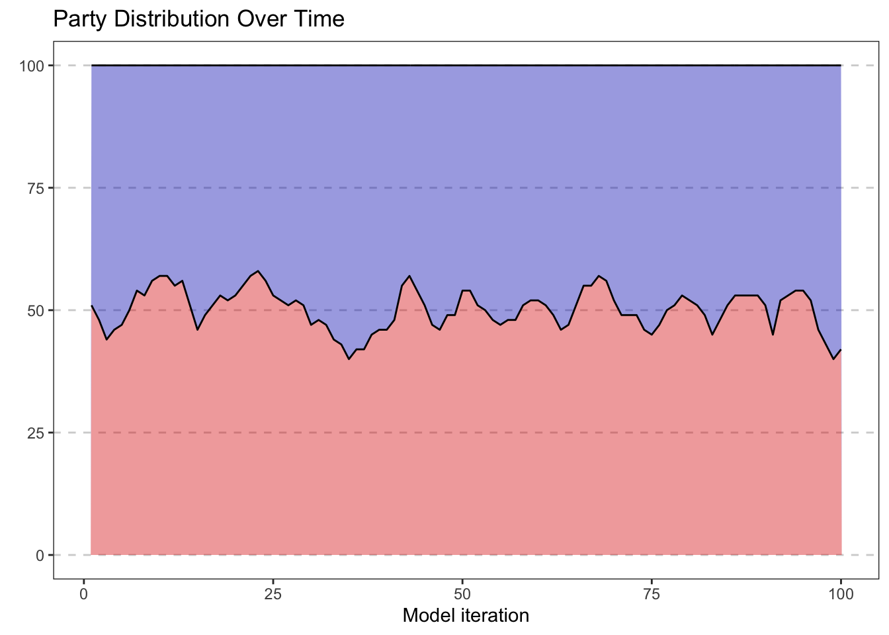
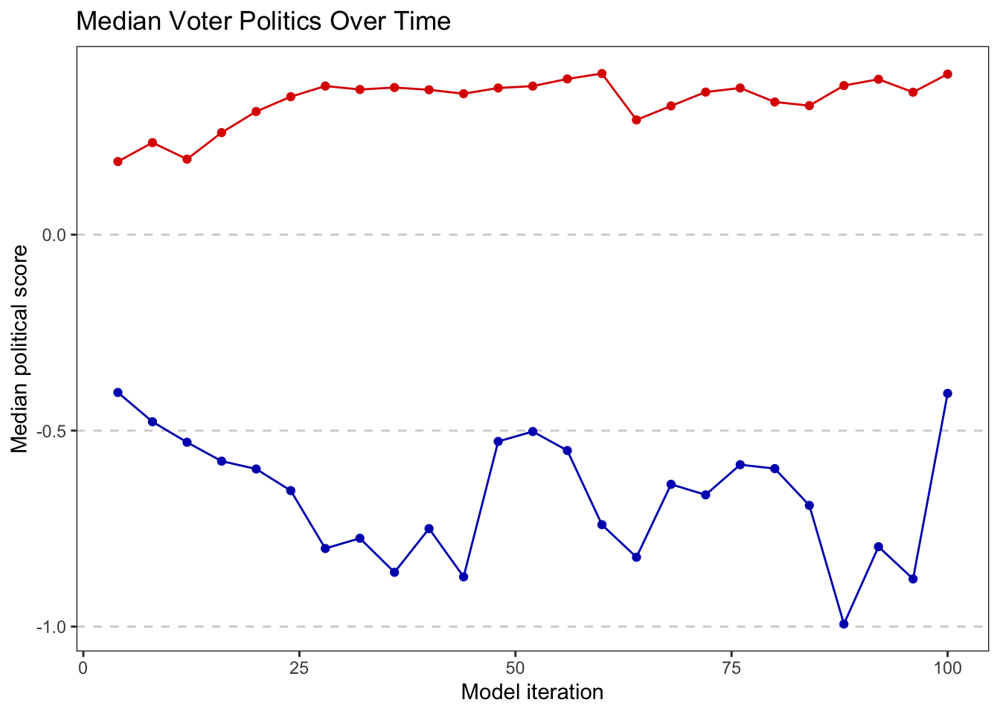
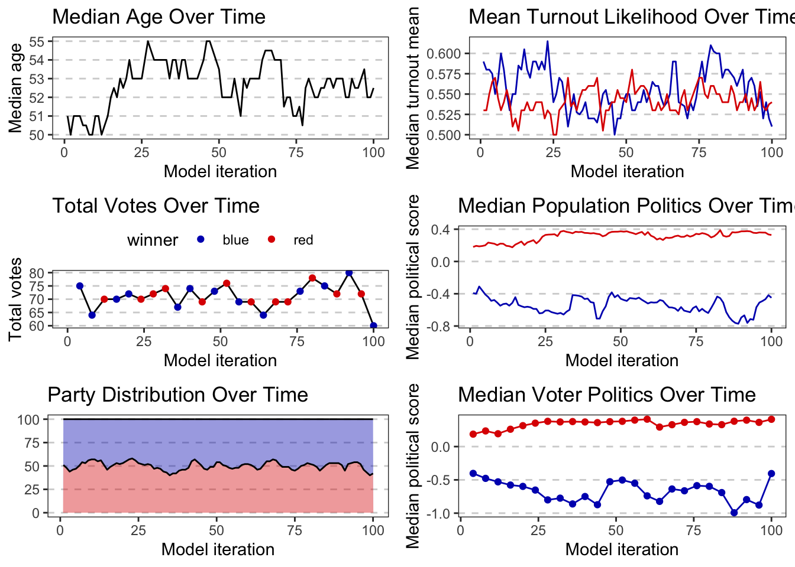

library(tidyverse)
library(RSQLite)
library(gridExtra)
RED <- "#DE0100"
BLUE <- "#0015BC"
party_color <- list("red" = RED, "blue" = BLUE)db <- dbConnect(SQLite(), dbname = "simulation.db")
agent_query <- "SELECT * FROM agents;"
election_query <- "SELECT * FROM elections;"
agent_df <- dbGetQuery(db, agent_query)
election_df <- dbGetQuery(db, election_query)
dbDisconnect(db)
agents <- as_tibble(agent_df)
elections <- as_tibble(election_df)Visualizations
Median voter age over time
# median age over time
age <- agents |>
group_by(model_iteration) |>
summarise(median_age = median(age)) |>
ggplot(aes(x = model_iteration, y = median_age)) +
geom_line() +
labs(
title = "Median Age Over Time",
x = "Model iteration",
y = "Median age"
) +
theme_test() +
theme(
panel.grid.major.y = element_line(color = "lightgray", linetype = "dashed")
)
age
Median turnout likelihood by party
turnout <- agents |>
group_by(model_iteration, color) |>
summarise(median_turnout_mu = median(turnout_mu)) |>
ggplot(aes(x = model_iteration, y = median_turnout_mu)) +
geom_line(aes(color = color)) +
scale_color_manual(values = c("red" = RED, "blue" = BLUE)) +
labs(
title = "Mean Turnout Likelihood Over Time",
x = "Model iteration",
y = "Median turnout mean"
) +
theme_test() +
theme(
panel.grid.major.y = element_line(color = "lightgray", linetype = "dashed"),
legend.position = "none"
)
turnout
Total votes per election
n_iters <- max(agents$model_iteration)
votes <- elections |>
mutate(total_vote = red_count + blue_count) |>
ggplot(aes(x = model_iteration, y = total_vote)) +
geom_line() +
geom_point(aes(x = model_iteration, y = total_vote, color = winner)) +
scale_color_manual(values = party_color) +
xlim(0, n_iters) +
labs(
title = "Total Votes Over Time",
x = "Model iteration",
y = "Total votes"
) +
theme_test() +
theme(
panel.grid.major.y = element_line(color = "lightgray", linetype = "dashed"),
legend.position = "top"
)
votes
Median political score over time
politics <- agents |>
group_by(model_iteration, color) |>
summarise(median_politics = median(politics_score)) |>
ggplot(aes(x = model_iteration, y = median_politics)) +
geom_line(aes(color = color)) +
scale_color_manual(values = c("red" = RED, "blue" = BLUE)) +
labs(
title = "Median Population Politics Over Time",
x = "Model iteration",
y = "Median political score"
) +
theme_test() +
theme(
panel.grid.major.y = element_line(color = "lightgray", linetype = "dashed"),
legend.position = "none"
)
politics
Party distribution over time
party <- agents |>
group_by(model_iteration, color) |>
summarise(count = n()) |>
group_by(model_iteration) |>
mutate(pct = (count / sum(count)) * 100) |>
ggplot(aes(x = model_iteration, y = pct, fill = color)) +
geom_area(color = "black", alpha = 0.4) +
scale_fill_manual(values = party_color) +
labs(
title = "Party Distribution Over Time",
x = "Model iteration",
y = element_blank()
) +
theme_test() +
theme(
panel.grid.major.y = element_line(color = "lightgray", linetype = "dashed"),
legend.position = "none"
)
party
Median voter politics over time
Note: this is different than the population politics. This only includes those that turned out to vote
voters <- agents |>
filter(voted == 1) |>
group_by(model_iteration, color) |>
summarise(median_politics = median(politics_score)) |>
ggplot(aes(x = model_iteration, y = median_politics)) +
geom_line(aes(color = color)) +
geom_point(aes(color = color)) +
scale_color_manual(values = c("red" = RED, "blue" = BLUE)) +
labs(
title = "Median Voter Politics Over Time",
x = "Model iteration",
y = "Median political score"
) +
theme_test() +
theme(
panel.grid.major.y = element_line(color = "lightgray", linetype = "dashed"),
legend.position = "none"
)
voters
Combined visualizations
gage <- ggplotGrob(age)
gturnout <- ggplotGrob(turnout)
gvotes <- ggplotGrob(votes)
gpolitics <- ggplotGrob(politics)
gparty <- ggplotGrob(party)
gvoters <- ggplotGrob(voters)
grobs = list(gage, gturnout, gvotes, gpolitics, gparty, gvoters)
# display graphs in a grid
grid.arrange(grobs = grobs, ncols = 2)